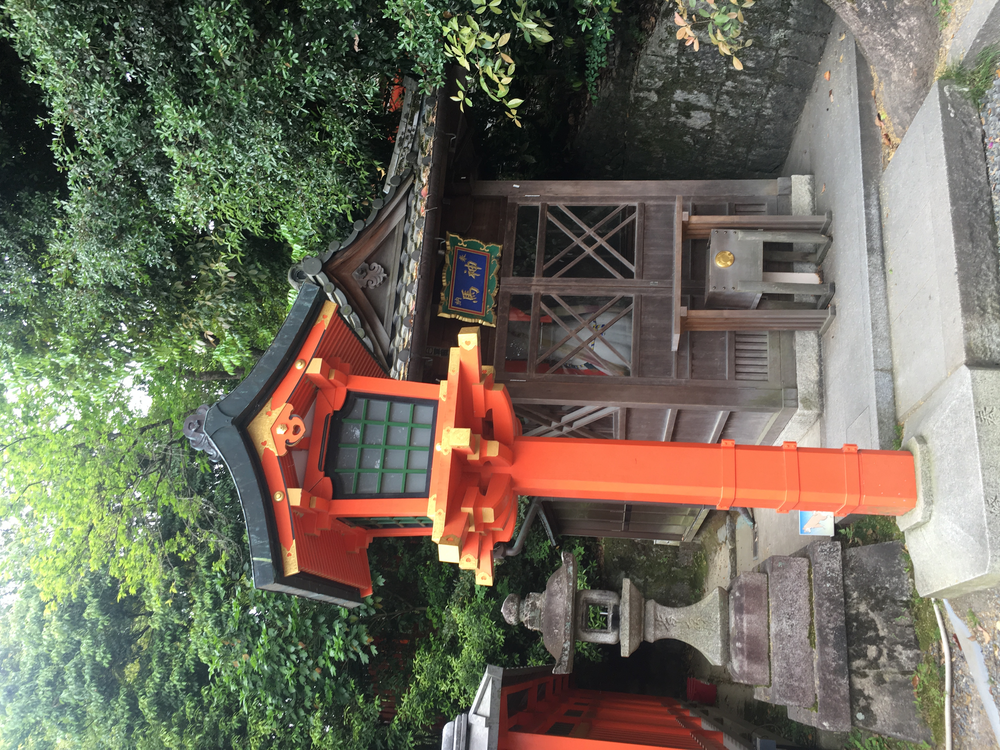
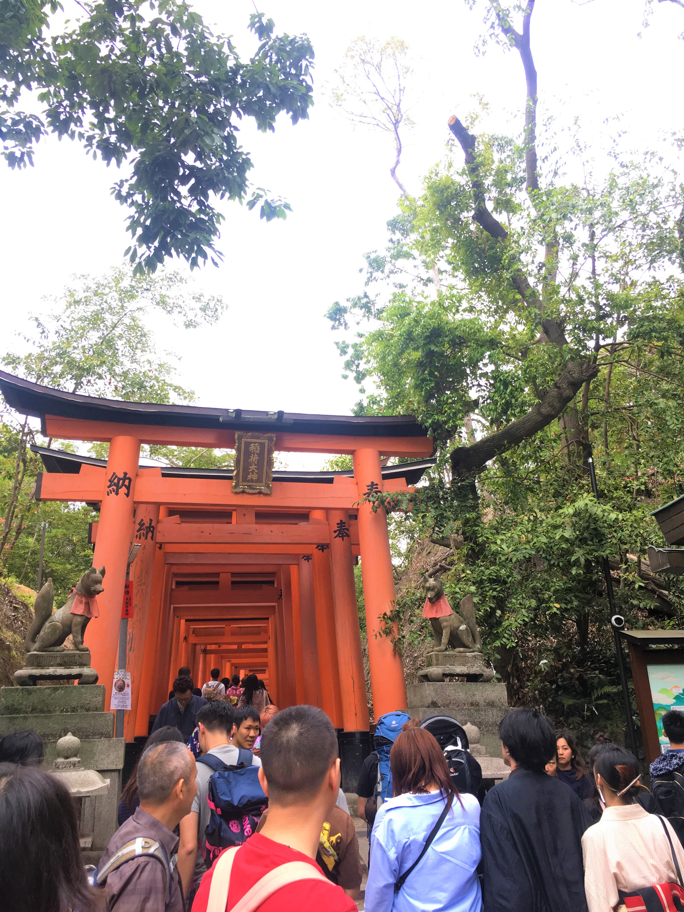
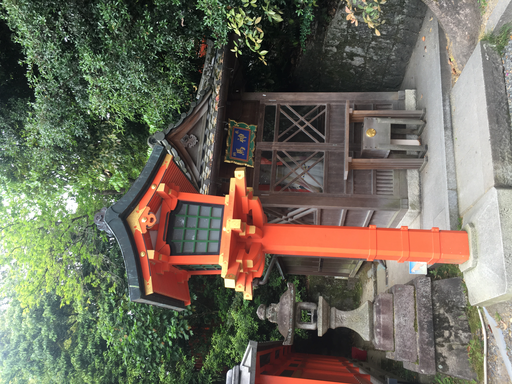
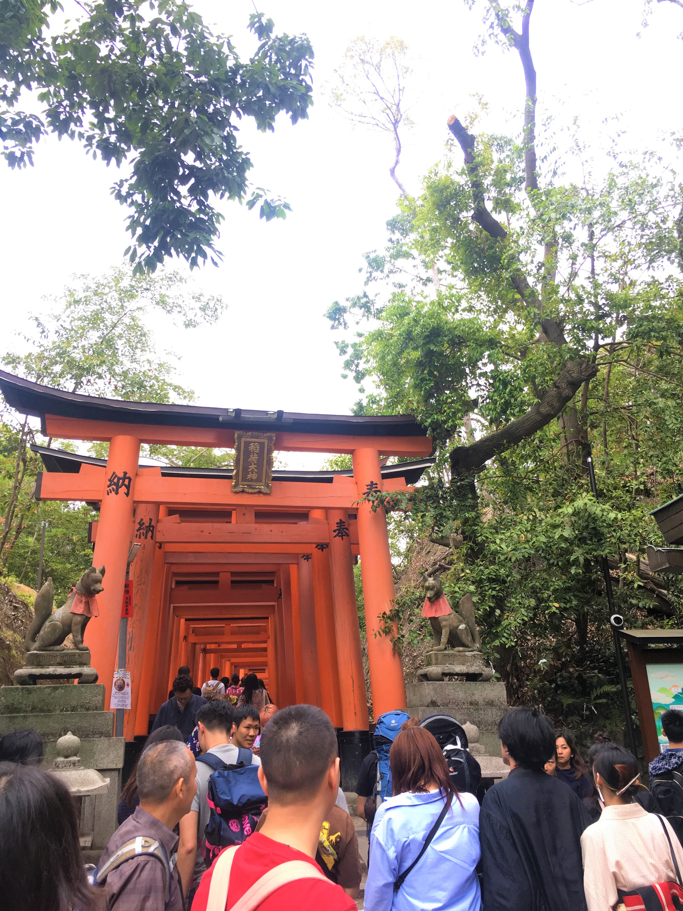

Holiday in Kyoto and Osaka
Three nights in Kyoto and one night in Osaka.
- Day 1, 17 May 2019 Arrived at Osaka airport, headed to the hotel and relax in the evening.
- Day 2, 18 May 2019 Started our sightseeing!
岡崎神社 京都知名求子兔子神社Higashi-Tenno Okazaki-Jinja Shrine (Rabbit Shrine) →伏見稻荷大社Fushimi Inari Taisha
 >Higashi-Tenno Okazaki-Jinja Shrine (Rabbit Shrine)岡崎神社


>Higashi-Tenno Okazaki-Jinja Shrine (Rabbit Shrine)岡崎神社


 Fushimi Inari Taisha 伏見稻荷大社
Fushimi Inari Taisha 伏見稻荷大社
- Day 3, 19 May 2019 Nara Park
東大寺Tōdai-ji → 奈良公園Nara Park


金閣寺Kinkaku-ji → 大阪市區Osaka

Back to Sweet Home!